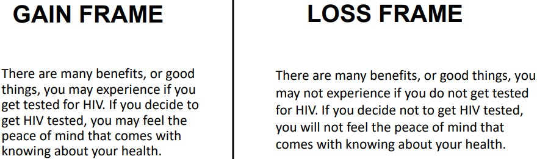

5 Persuasion
This week’s lecture discusses various aspects of persuasion.
5.1 Three Dimensions of Persuasion
The three dimensions are:
- Change in Attitude
- Change in Behavior
- Persistent Change
5.2 Weapons of Influence
The assigned reading lists several:
Reciprocity
If somebody does something for you, you will typically feel the need to reciprocate and do something in return.
Commitment and Consistency
People strive for consistency in their behaviors, and this desire can sometimes be used against the person.
Social Proof
When one is unsure how to act, they look to others around them for guidance.
Authority
People tend to respond more readily to individuals who they view as authority figures.
Scarcity
People tend to go after items that appear to be high demand.
5.2.1 Elaboration Likelihood Model (i.e., ELM)
This model states that individuals are motivated by two routes:
Central Route to Persuasion
This is the highly cognitive route to persuasion (i.e., the route that uses facts and logic).
This route kicks in when the message shown is counter-attudinal.
Peripheral Route Persuasion
Certain cues in the message being shown lead people to accept the proposition with very little thought or scrutiny (e.g., emotional appeals, source credibilities, etc).
5.3 Cultivation Theory
Social media presents a view of social reality.
First order cultivation is a process whereby heavy viewers believe that the real world is like the TV world.
Second order cultivation is a result of viewers adopting a particular attitude as a result of their media exposures.
5.3.2 Criticisms of Cultivation Theory
No conclusive testing has been done on this theory; most research has only found effects in the short term (i.e., not the long term).
5.3.3 Landscape Theorem
“When people watch a movie, their primary focus is on comprehending the story. What viewers cognitively do with different information in a movie — including brand placements — depends on the implications of the information for comprehending the movie.”
– Yang & Roskos-Ewoldsen
There are two kinds:
Explicit Memory
In other terms, recall the brand.
Implicit Memory
Respondents were asked to fill in the blanks after showing them word fragments.
In the study conducted by Yang & Roskos-Ewoldsen, 375 participants were assigned to any of the three conditions:
- Product brands appeared in the background in an incidental way.
- The product was used by the main character.
- The product was centrally connected to the main story.
The highest level of recognition was observed when the product was tied in with the main story (e.g., Transformers).
Participants who saw the main character using the brand were lower on recognition as opposed to the third condition. However, it was still higher than the first condition.
5.4 Prospect Theory
Some key assumptions of this theory include:
- People want to avoid losses and not gains (i.e., people are loss-averse).
- People are risk averse when facing gains, but risk-seeking when faced with losses.
5.4.1 Message Framing
When individuals consider a behavior that involves some risk of an unwanted outcome (e.g., a health problem), loss-framed appeals tend to be more appealing.
“Framing has theoretical roots in prospect theory, which states that presenting the sameinformation about risk in different ways alters people’s perspectives, preferences and actions.”
– Kahneman & Tversky, 1979
However, when individuals consider an activity with a low-risk of an unwanted outcome, gain-framed appeals tend to be more effective.
5.4.2 Third Person Effect
This is the belief that media influence is stronger for others than it is for the individual.